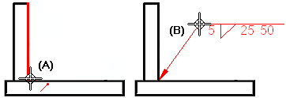

Place a weld symbol
-
Choose File menu →Settings→Options→Drawing Standards tab.
-
Choose a Weld Symbols standard.
-
Select the Weld Symbol command , which is located in the Annotation group on the Home tab, the Sketching tab, or the PMI tab.
-
On the General tab (Weld Symbol Properties dialog box), click within an input box and then set the properties you want for it by typing or using the buttons provided.
This is the user interface that is displayed when the ANSI/ISO/DIN Weld Symbol standard is selected. To learn how to define this type of weld symbol, see the help topic, Example: Define a weld symbol.
 Tip:
Tip:Tooltips are available for every button and input box in the dialog box.
-
Click OK to close the Weld Symbol Properties dialog box and continue.
-
Click an element to attach the terminator end of the weld symbol (A).
-
Click where you want to place the weld symbol (B).

-
To place a model PMI annotation that references multiple elements instead of a single element, click Referenced Geometry
 on the command bar. To learn how to use this option, see Select multiple reference elements.
on the command bar. To learn how to use this option, see Select multiple reference elements. -
For GOST weld symbols, you can insert property text references to other annotations or drawing views by selecting the Reference Text button
 . For more information, see Create reference text.
. For more information, see Create reference text. -
You can retrieve weld symbol labels you added to a 3D model using the Tie to Geometry option on the Weld Symbol command bar.
-
You can attach a weld symbol to another weld symbol to create a compound weld symbol.
-
You can double-click a weld symbol to edit its properties.